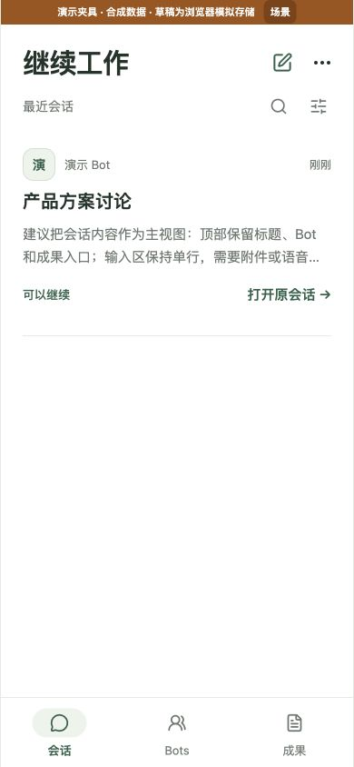
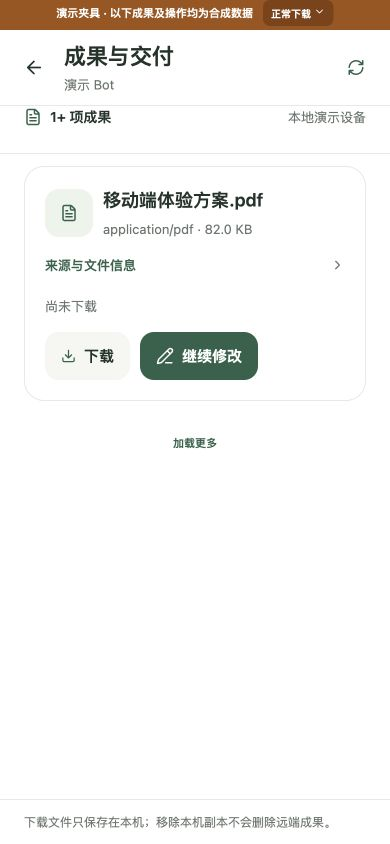

<!doctype html><html lang="zh-CN"><meta charset="utf-8"><meta name="viewport" content="width=device-width,initial-scale=1"><title>MoXBots · 聚焦任务</title><style>*{box-sizing:border-box}body{margin:0;background:#f3f5f0;color:#24332b;font-family:system-ui,-apple-system,sans-serif;padding:28px}header{max-width:1200px;margin:0 auto 22px}h1{font-size:28px;margin:0 0 8px;font-weight:600}p{font-size:15px;line-height:1.6;color:#64716a;margin:0}main{max-width:1200px;margin:auto;display:grid;grid-template-columns:repeat(4,minmax(0,1fr));gap:20px}h2{font-size:17px;margin:0 0 10px;font-weight:600}img{display:block;width:100%;border-radius:18px;border:1px solid #e1e5de}a{color:#35624b;text-decoration:none}footer{max-width:1200px;margin:20px auto 0;font-size:14px;line-height:1.6;color:#64716a}@media(max-width:850px){main{grid-template-columns:repeat(2,minmax(0,1fr))}}@media(max-width:480px){body{padding:20px}main{grid-template-columns:1fr}}</style><header><h1>进来，继续手上的任务</h1><p>聚焦版效果预览 · 同为390宽的实际组件截图 · 合成演示，尚未发布到手机</p></header><main><section><h2>上一版 · 首页</h2><a href="evidence/before-home-390.png"></a></section><section><h2>现在 · 直接看任务</h2><a href="evidence/home-390.png"></a></section><section><h2>对话 · 少一层说明</h2><a href="evidence/conversation-390.png"></a></section><section><h2>成果 · 直接继续修改</h2><a href="evidence/artifacts-390.png"></a></section></main><footer>搜索、筛选按需展开；审批和成果入口保留。　<a href="http://127.0.0.1:18830/">打开本机交互预览 →</a></footer></html>